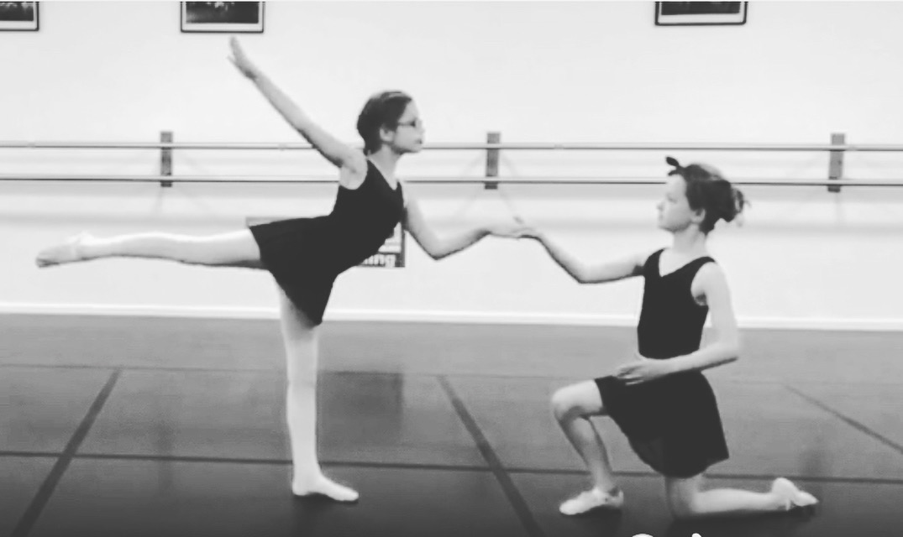
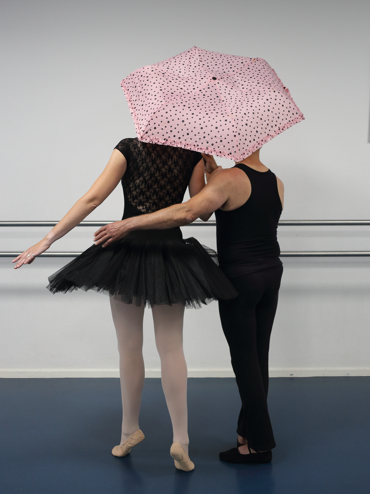
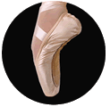
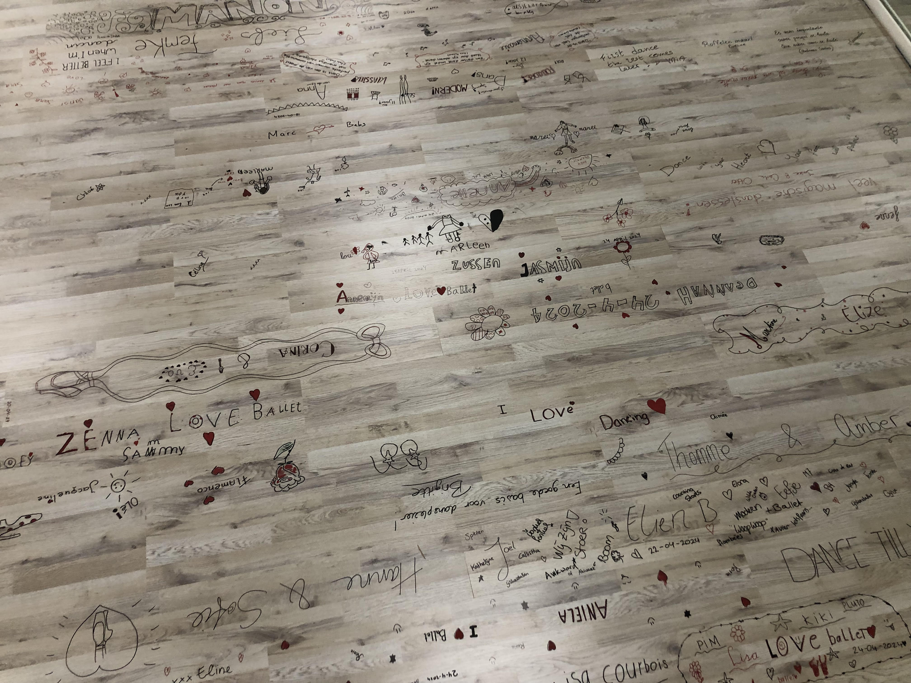

Dansplezier
Plezier in dansen is er voor groot en klein. Dansen is niet alleen goed voor je lijf maar je ontwikkeld ook bewustzijn van je lichaam, muzikaliteit, en creativiteit. En je wordt er ook heel blij van!

Wil je dit zelf ervaren? Kom vrijblijvend een proefles doen. aanvragen proeflesInschrijven nieuw seizoen 2026-2027
 Heb je je nog niet ingeschreven via het nieuwe systeem? Klik dan op de link om in te schrijven. Zo mis je geen nieuwtjes of wijzigingen!
Heb je een proefles gedaan en wil je graag blijven dansen? schrijf je dan in via deze link inschrijven seizoen 26-27
Heb je je nog niet ingeschreven via het nieuwe systeem? Klik dan op de link om in te schrijven. Zo mis je geen nieuwtjes of wijzigingen!
Heb je een proefles gedaan en wil je graag blijven dansen? schrijf je dan in via deze link inschrijven seizoen 26-27
Grote Club Actie
 De leerlingen mogen van 19 september t/m 27 oktober loten verkopen bij familie, vrienden en buren. Met deze actie hopen we extra te sparen voor onze voorstelling.
Wil je ook loten kopen? Je steunt ons en maakt ook kans op een prijs. Klik op de link Grote Club Actie
De leerlingen mogen van 19 september t/m 27 oktober loten verkopen bij familie, vrienden en buren. Met deze actie hopen we extra te sparen voor onze voorstelling.
Wil je ook loten kopen? Je steunt ons en maakt ook kans op een prijs. Klik op de link Grote Club Actie
Herfstvakantie

van 19 t/m 23 oktober is het Herfstvaknatie, er zijn dan geen lessen.Dansvoorstelling 26 juni 2027
op zaterdag 26 juni is onze grote dansvoorstelling. We dansen in het Musis in Arnhem een zelf bedacht sprookje... Nodig alvast je publiek uit om te komen kijken!
Ballet Spelletje Balletris

Typ deze code in op je toetsenbord: ⬆⬆⬇⬇⬅➡⬅➡ baFloor of Fame

Onze vloer is een feit met dank aan alle lieve dansers, fans en de sponsor Go Cybersafe. *GoCybersafe